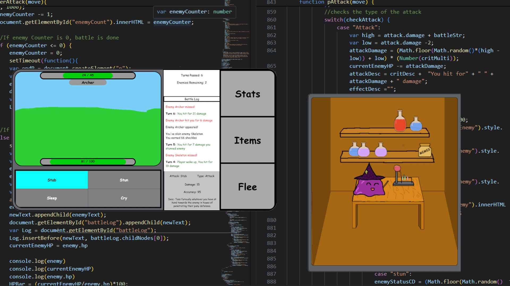
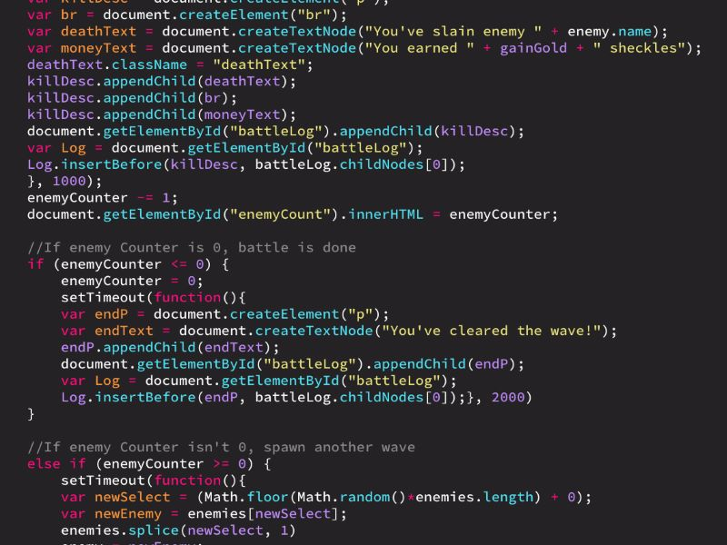
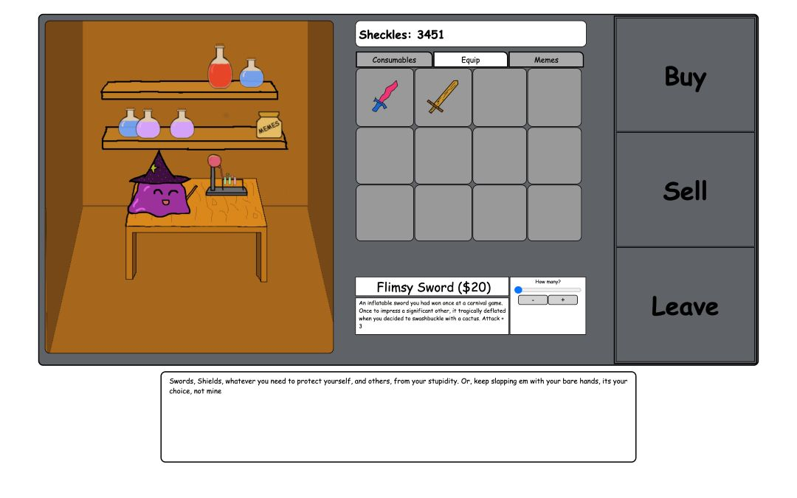
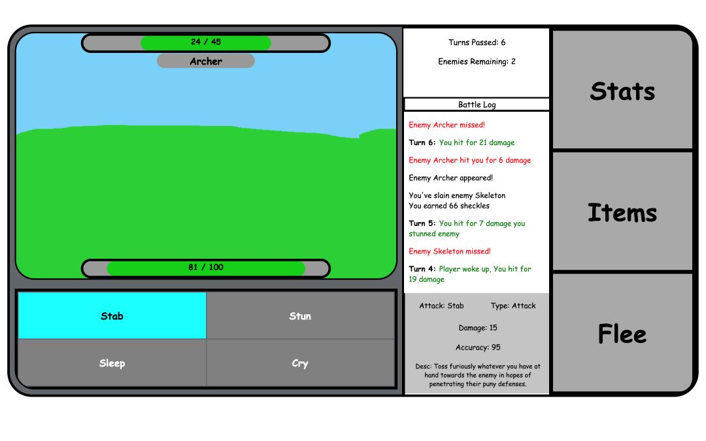

For a highschool introduction to coding, our class was tasked with developing an application or game through a means of our choice. A friend and I opted to create a combat based RPG called The Penstares inspired by the whimsical nature of games such as West of Loathing. A majority of the game was designed using HTML, CSS, and JavaScript, with character stats and inventory transferred via PHP.
- I primarily worked on implementing the currency system, combat mechanics, and determining the statistics to be tracked and carried over for the player character.
- I also worked on the front-end designing the UI elements and user experience for character selection, the shop, and one of our combat encounters.
- Finally I worked with my friend on generating the artistic assets for the game, doing basic sprite work and environment art.
Designing the UI
For the design of each page, I sought to find inspiration from similar games to consolidate into our UI. The goal was to try new functions and features, as I wanted to learn more about code and web design.
For the combat log, I made use of JavaScript element creation, learning about parent / child elements and the append / prepend functions. Meanwhile in coding the shop, I started learning about object lists, attribute assignment, and calling on specific attributes in the list.

Designing Combat
I aimed to code a combat similar to common RPGs, with a diverse cast of enemies each with unique attacks and crowd control abilities. Here I tried using JavaScript objects and classes to define enemy attributes and movesets.
We aimed to make a modular combat algorithm, which allowed each attack to be given base damage, modifiers for high / low rolls, accuracy, secondary effects, and flavor text. Lastly, for the secondary effects, we added the ability for attacks to land critical hits, or inflict status effects such as sleep, bleed, and stun.

Linking Pages
As my first introduction to coding, a multitude of challenges arose when trying to preserve information when switching between pages. For this, we made use of PHP forms to post and receive information, which was able to transfer our data between pages, though without knowledge of database or local storage such as cookies, we were limited to play ‘sessions’.
By transferring the player profile in PHP, we were able to allow quantifiable information such as inventory, currency, and stat gains to persist from combat encounters or shop purchases,
While the code is quite unoptimized looking back at it now, this was the first project I had ever undertaken involving coding an application at a larger scale than a single webpage. This was an incredibly fun class project where I got to learn about persistent data across web pages, data manipulation, and integrating it all with front and back end. It also gave me the chance to learn the basics of UI and designing to be eye-catching without being overwhelming.